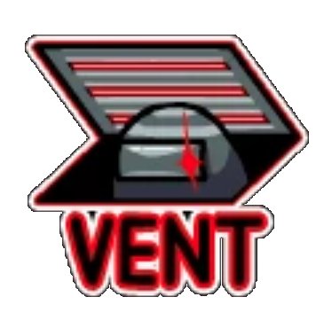

Mapas
The Skeld

MIRA HQ

Polus


Utilizar Ventilación/Conductos de Ventilación/ Respiraderos es una habilidad de Among Us, que pueden utilizar los Impostores como medio de viaje y para esconderse en el mapa.
Como Impostor, cuando esté lo suficientemente cerca de una ventilación, el botón de sabotaje será reemplazado por el botón de ventilación. Si se hace clic, una animación muestra al jugador saltando al respiradero, una acción visible para cualquier otro jugador en las cercanías en The Skeld y MIRA HQ. Una vez en las rejillas de ventilación, se muestran flechas que apuntan en las direcciones de las rejillas de ventilación conectadas. Esconderse en las rejillas de ventilación pausa tanto la habilidad Matar como el sabotaje del jugador hasta que sale.
No hay respiraderos en todos los lugares: